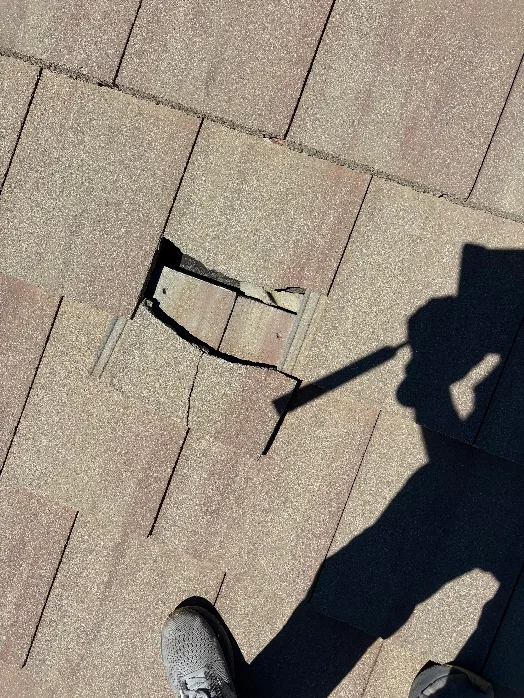
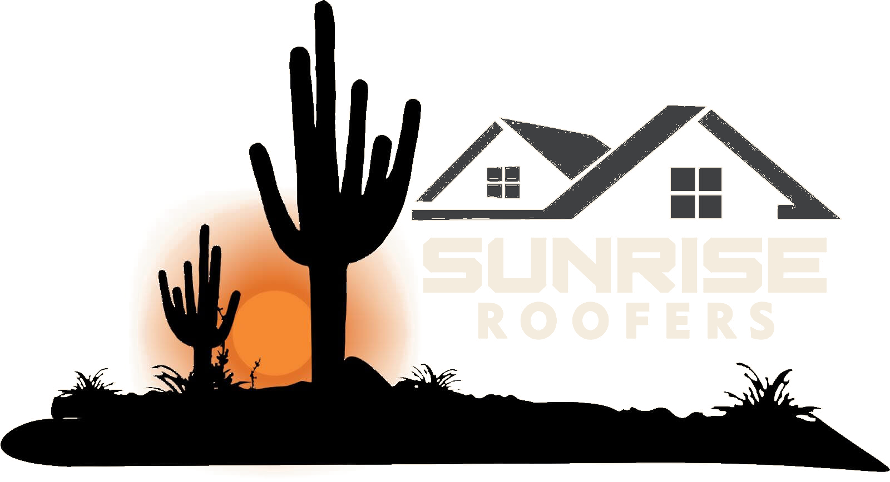
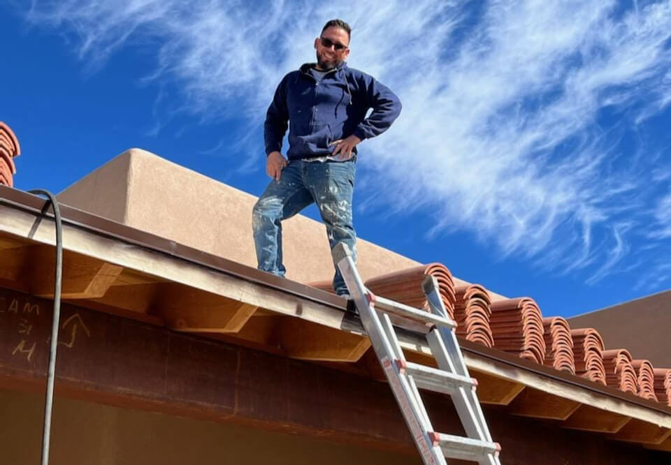
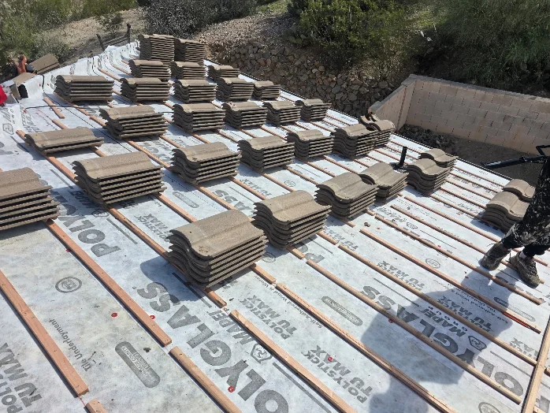
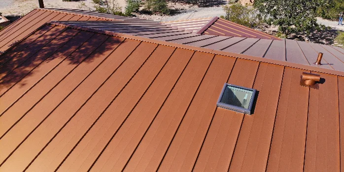
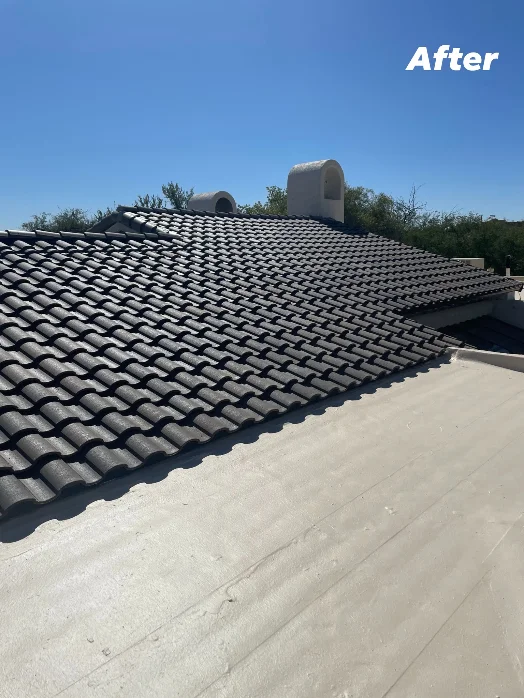
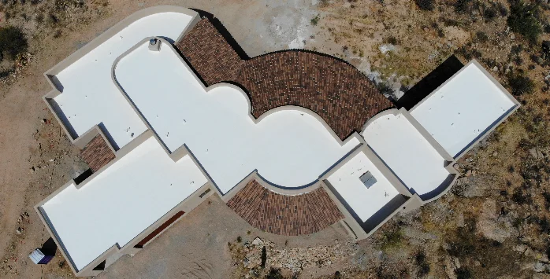
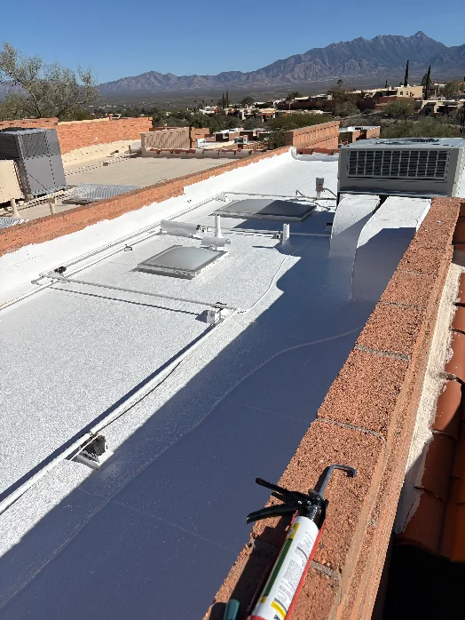
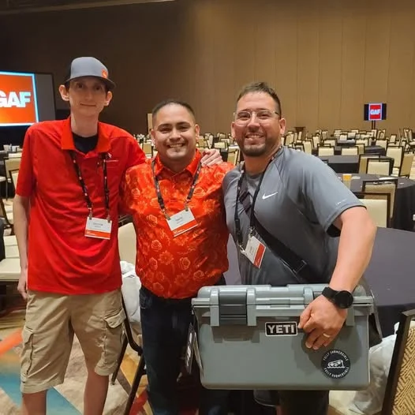

Repairs

Roof Repair
Leaks, busted flashing, storm damage, cracked tile — we track down what's actually wrong and fix it fast.
Learn MoreSUNRISE ROOFERS Tucson's Trusted Roofing Experts

Roofing Done Right by a Tucson Family
Trusted by Tucson homeowners, property managers & businesses
Family-Owned by Eddie & Viky Guillen · ROC #358079
Sunrise is Eddie and Viky Guillen — a Tucson family business. Eddie's been on these roofs 20-plus years and runs every job like his name's on it, because it is. Leak or full tear-off, you get a straight answer, clean work, and a roof that finally quits leaking. No pressure, no closers, no sign-today games.
Mornin'…
Caught more sunrises up here than on my own porch.

Meet the Owner
I started Sunrise Roofers because I got tired of watching folks get talked into roofs they didn't need. Roofing's a family trade for us, and I've spent my career on Arizona rooftops — learning firsthand what actually holds up against our heat and monsoons. Quick leak or a full tear-off, I'll come look at it myself, tell you straight what it needs, and give you a price that doesn't move. No salesmen, no runaround — just me and a crew that takes every job personally.
What We Do
No two roofs are the same. We'll give it to you straight and point you to what yours actually needs — a repair, a coating, or a full replacement — not whatever rings up the biggest.

Leaks, busted flashing, storm damage, cracked tile — we track down what's actually wrong and fix it fast.
Learn More
Full tear-offs and new roofs built to take Arizona's sun and last decades, not just a few seasons.
Learn More
Standing-seam metal that bounces the heat and shrugs off monsoons — for Tucson homes and businesses alike.
Learn More
Concrete and clay tile — repairs, re-felts, new underlayment, and upkeep that keeps it watertight.
Learn More
Elastomeric coatings and fixing the spots where water pools before they turn into leaks.
Learn More
Offices, retail, warehouses and multi-family — roofs we work around your hours, not the other way around.
Learn More
Why Choose Sunrise Roofers
A lot of roofing outfits in town are national chains chasing a sales number. We're not. We're a family-owned, owner-led Tucson crew — and whether it's a simple leak or a full replacement, you get a roofer who's done this a thousand times and cares about getting it right the first.
Resources
Straight answers to what folks around Tucson ask us most. Still wondering about something? We're a phone call away.
Ask Us AnythingLet's Talk
Tell me what's going on up there — a leak, storm damage, an old roof that's seen better days, or a full replacement — and we'll get you on the books for a free inspection.
Where We Work
Based in Tucson and covering a 40-mile radius — from Oro Valley and Marana down through Sahuarita, Green Valley and Vail, out to Benson.
Not sure if you're in range? Just ask — if you're anywhere in the Tucson metro, odds are we've got you covered.
Check Your Address